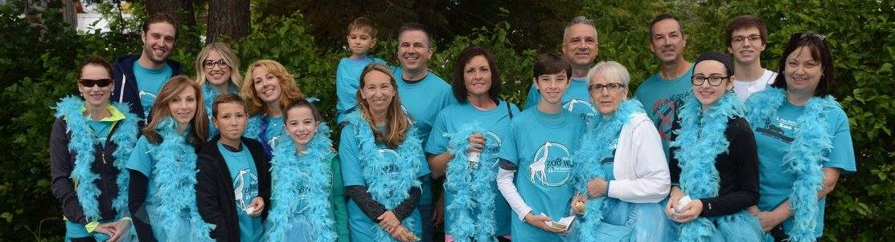
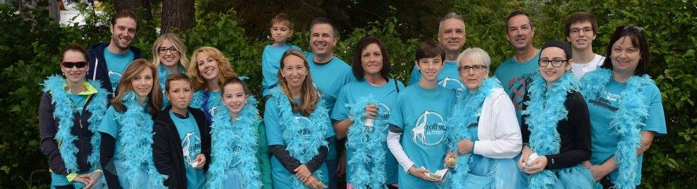

Facts and Statistics
- Ovarian Cancer is the deadliest gynecological cancer
- 20% of Ovarian Cancers are found during an early stage
- 90% of women who are diagnosed with Ovarian Cancer do not have any known risk factors
- The 5 year survival rate is 66% for those women diagnosed during Stage II Ovarian cancer, dropping to a survival rate of 34% for those women diagnosed during Stage III Ovarian Cancer
Symptoms
- Abdominal bloating
- Increased abdominal girth (e.g. Clothes feeling tighter around the waist)
- Difficulty eating / Feeling full too quickly
- Abdominal or pelvic pain / discomfort
- Frequency in urination
Who is at risk?
- Half of all Ovarian Cancer cases are found in women in their mid-60s or older
- Never having given birth to any children
- Infertility
- Personal history of Breast Cancer
- Family history of Breast, Colorectal, or Ovarian Cancer